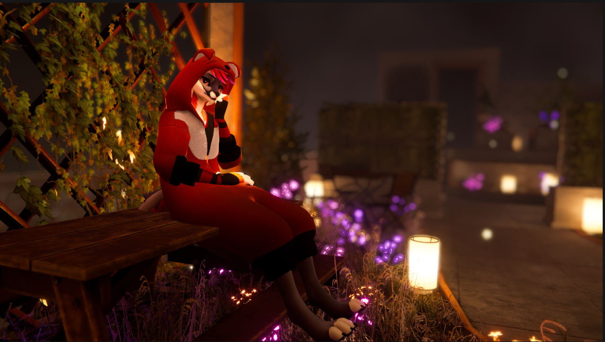
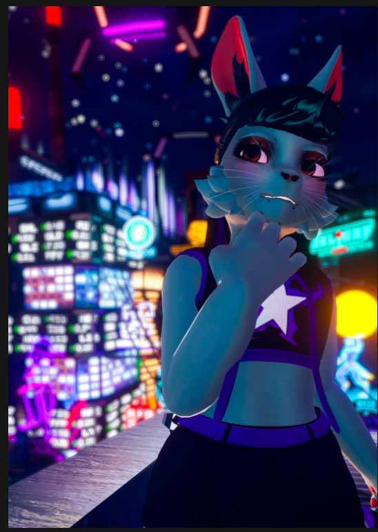
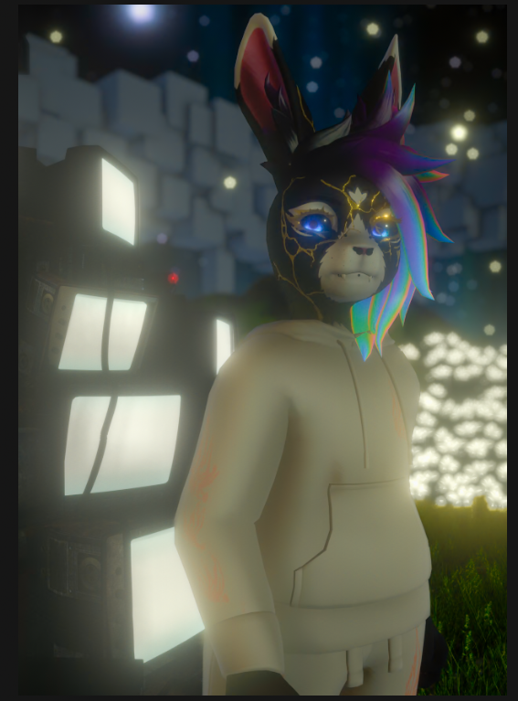

2026 // Almost touching
This body of work is about intimacy.
The kind that happens when you strap a screen to your head and faff about learning how to be close to people thousands of miles away. VRChat is a VR Social platform, and for a lot of people, it's the only place where real connection is actually possible. John lives in rural Czech Republic, far from any queer community where he can just be himself. 5bi5 navigates life with military-related PTSD and rarely leaves home. Sif is someone I wouldn't have met, let alone built a life with, without it. VR gave all of us a space that felt protected enough to let people in. This project allowed me to showcase how VRChat allows intimacy to those who would otherwise struggle to experience it. However the level of intimacy and immersion you're able to experience is entirely conditional. Full body tracking and face tracking matter more than people realise. Eye contact, body posture, facial expression, these carry a huge amount of human communication, and without them something gets lost. The gap between a £150 second-hand headset and a £2k+ full immersion setup means that level of presence isn't equally available to everyone, and even at the high end, the technology is still temperamental enough to pull you out of the moment. The clothing each person chose is part of that same conversation. Identity and selfhood and how we present ourselves in spaces where we finally feel safe to do so. A fisherman's cap. A quote from Paradise Lost. A kigurumi. Small things that say something true about who these people are. At its core, this is a love letter to a community that made me believe connection was possible in the first place.



You can find my sketchbook for this project here: https://www.buddywulf.com/